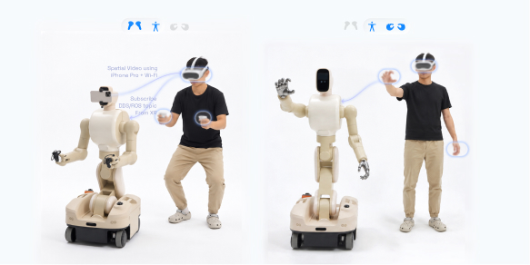

Unified Teleop XR: Open-source toolkit
Developed a Unity toolkit that reads pose, velocity, and interaction input through OpenXR and publishes it to ROS 2 topics through Cyclone DDS. It handles tracking loss and abnormal motion, enforces motion limits, and reconstructs point clouds and meshes from spatial video with GPU compute shaders.
- Unity
- OpenXR
- ROS 2
- Cyclone DDS
- Robot Teleoperation
- Compute Shaders
- Spatial Video Reconstruction